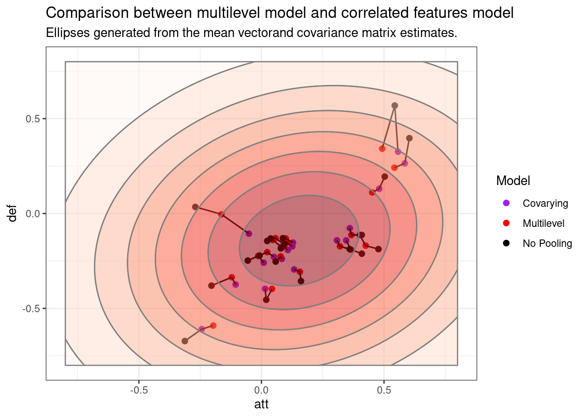

Premier League Match Predictions using Bayesian Hierarchical Models
Author
Suhishan Bhandari
Published
January 30, 2025
Introduction
The blog aims to estimate every Premier League team’s attack and defence strengths using their match scores from gameweeks (from the 2023/24 Premier League season). Three different but related models are used to estimate these features. Then, using the strength estimates from these models, I then show preliminary prediction results for the 38th gameweek in terms of win/draw/loss probabilities.
Models
Data
The data used is parsimonious by design. We have information on the names of home and away teams and their respective scores for each of the 380 matches played in Premier League Season 2023/24.
head(data)
Home s1 s2 Away
1 Burnley 0 3 Manchester City
2 Arsenal 2 1 Nottingham Forest
3 Sheffield United 0 1 Crystal Palace
4 Newcastle United 5 1 Aston Villa
5 Brighton 4 1 Luton Town
6 Everton 0 1 Fulham
Model 1 : No-Pooling Model
Model Description and Stan
The first model is the no pooling model where every team gets its own attack and defence parameters (different intercept for each) but none of these parameters are related to each other in any way. The model description and stan code below clarify this further1.:
and are home and away scores respectively for a given match, which are assumed to be Poisson processes with their respective s. Scores are dependent on whether the team plays at home, and the attack and defense strengths of the home team () and the away team().
{stan}#| eval: falsedata {int<lower=0> nt; // number of teams (20)int<lower=0> ng; // number of games (370)int<lower=0> np; // number of games to predict (final 10 games)array[ng] int<lower=1> ht; //home team indexarray[ng] int<lower=1> at; // away team indexarray[ng] int<lower=0> s1; // home team scorearray[ng] int<lower=0> s2; // away team scorearray[np] int<lower=0> htp; // home team index for predictionarray[np] int<lower=0> atp; //away team index for prediction}parameters{real home;vector[nt] att;vector[nt] def;}transformed parameters{vector[ng] theta1; // poisson lambda for home teamvector[ng] theta2; // poisson lambda for away team theta1 = exp(home + att[ht] - def[at]); theta2 = exp(att[at] - def[ht]);}model{//priors att ~ normal(0, 1); def ~ normal(0, 1); home ~ normal(0, 1);// likelihood s1 ~ poisson(theta1); s2 ~ poisson(theta2);}generated quantities {vector[np] theta1p; // home team predicted scorevector[np] theta2p; // away team predicted score.vector[ng] log_lik; // a vector of log-likelihood per observationarray[np] int s1p; // score prediction for home using theta1p.array[np] int s2p; // score prediction for away using theta2p. theta1p = exp(home + att[htp] - def[atp]); theta2p = exp(att[atp] - def[htp]); s1p = poisson_rng(theta1p); s2p = poisson_rng(theta2p);// TODO generate a log-likelihood for WAIC loo-PSIS.for (i in1:ng) { log_lik[i] = poisson_lpmf(s1[i] | theta1[i]) + poisson_lpmf(s2[i] | theta2[i]); }}
Prior Predictive Simulation
Before we venture into the realms of estimation and prediction, let’s see the prior distribution of our parameters. Home Scores () and Away Scores () depend upon some average rate and respectively, which again depend upon a team’s attack and defence strengths throughout the season. If parameters home, att and def are assumed to be normally distributed, and with restricted to being positive with exponentiation, the home and away scores ranges from to almost goals and beyond. This means that with these priors, the model, a priori believes that PL teams can score upto 25 goals in a game! (which is absurd). This is almost certainly a very flat prior with the only information being embedded that scores must be positive. However, given that we have 370 matches as sample size to aid in our inference, these priors will do for now.
teams =unique(data$Home) # Team namesng =nrow(data) # number of gamesnt =length(unique(data$Home)) # number of teams# Home team indexht =unlist(sapply(1:ng, function(g) which(teams == data$Home[g]))) # Away team indexat =unlist(sapply(1:ng, function(g) which(teams == data$Away[g]))) np =10# Number of games to be predicted i.e. test sample lengthngd = ng - np # Number of games used to train i.e. train sample length.dat <-list(nt = nt,ng = ngd,ht = ht[1:ngd],at = at[1:ngd],s1 = data$s1[1:ngd],s2 = data$s2[1:ngd],# for predictionsnp = np,htp = ht[(ngd+1):ng],atp = at[(ngd+1):ng])
I compile the stan model with cmdstanr, which estimates the posterior using HMC, and I extract the posterior samples for and parameters for 20 teams. The relative and estimates for the 20 PL teams in 2023/24 is as follows:
m1 <-cmdstan_model("code/normal_model.stan")# Running this only oncem1fit <- m1$sample(data = dat, chains =8, parallel_chains =8, refresh =500)
As shown by the figure, the model does a good job of providing relative attack and defence strength estimates, with power clubs like Arsenal, Manchester City, and Liverpool high on both metrics and relegated clubs Burnley, Luton Town and Sheffield United relatively weaker. It must be pointed out that while the point estimates show relative differences, the credible intervals are wide and as such, to see whether there’s a significant difference between any two teams, we must use the posterior contrast. Nonetheless, the model provides a general picture of relative strengths.
Sidetrack: Preliminary Win/Loss/Draw Predictions
Using our relative attack and defense strength parameters from the model we just estimated, we can estimate win/lose/draw probabilities for each match of the final gameweek. For this purpose, I extract posterior samples for the home and away prediction for the final gameweek and . Stan provides the posterior of the prediction for us because of the way the generated quantities block is coded. We could have also gotten and outside stan, by using predictions of and .
Then, I write two functions: a) score_matrix which returns a matrix of probabilties of each home and away score, and b) result_prob which uses this score matrix to return win, loss and draw probabilities.
# Score matrix function for a game#--- Working with posterior draws ---#m1post = m1fit$draws(variables =c("s1p", "s2p"), format ="df")score_matrix <-function(post, game){ n_sample <-length(post[[game]]) home_p <-table(post[[game]])/n_sample # Posterior proportions of scores away_p <-table(post[[game +10]])/n_sample# Matrix of results. m =round(home_p %o% away_p, 3)return (m)}# Win/Loss/Draw Percentages.result_prob <-function(post, game) { m =score_matrix(post, game) hw =sum(m[lower.tri(m)]) d =sum(diag(m)) aw =sum(m[upper.tri(m)])return(c(hw = hw, d = d, aw = aw))}
For example, for gameweek 38’s match between Arsenal and Everton, the model estimates the goal matrix and result probabilities as follows:
The score matrix shows that the most likely scoreline is Arsenal 2 - 0 Everton (highest probability of joint occurrence) and that Arsenal is likely to win the match. If we estimate result probabilties for all 10 games we have:
# A tibble: 10 × 7
Home s1 s2 Away hw d aw
<chr> <int> <int> <chr> <dbl> <dbl> <dbl>
1 Arsenal 2 1 Everton 0.755 0.175 0.068
2 Sheffield United 0 3 Tottenham 0.127 0.15 0.717
3 Brentford 2 4 Newcastle United 0.335 0.214 0.446
4 Burnley 1 2 Nottingham Forest 0.349 0.253 0.393
5 Chelsea 2 1 Bournemouth 0.602 0.188 0.205
6 Liverpool 2 0 Wolves 0.745 0.154 0.101
7 Luton Town 2 4 Fulham 0.35 0.231 0.415
8 Manchester City 3 1 West Ham 0.825 0.106 0.065
9 Brighton 0 2 Manchester United 0.434 0.247 0.319
10 Crystal Palace 5 0 Aston Villa 0.322 0.229 0.444
The model estimates results for 8 matches correct, with varying certainty. The model gets it wrong on the final 2 games: Brighton vs. Man United and Crystal Palace vs. Aston Villa. This sheds a light into one of the limitations of the model (among its many limitations): the model does not take into account recent matches momentum, which Crystal Palace were enjoying very much from Oliver Glasner’s new appointment and a string of good results before the final gameweek.
Can a hierarchical model do better?
Model 2: Hierarchical Model
In a hierarchical (or multilevel model), we assume that our attack and defence strength parameters come from population attack and defence strength i.e. instead of assuming that each team’s attack and defence strengths being modelled and estimated independent of other teams, the parameters are now draws from a population parameter.
For e.g. takes as its prior as mean and as standard deviation.
The benefit of using such a hierarchical model is that it aids in minimizing over-fitting, whereby, if a team once scored 8 goals in a match, the model is more skeptical than the no-pooling model. Multilevel model shrinks extreme attack and defence strengths towards the mean. This is reasonable given the unpredictability of football results, whereby even in a game between a high-ranked team and a low-ranked team, the saying goes that ‘anything can happen in a football match’. Since it is our goal to predict the final gameweek, multilevel model incorporates our own sense of unpredictability and skepticism rather well. Multi-level models also squeeze a lot more information out of the data.
The stan code:
{stan}#| eval: falsedata {int<lower=0> nt; // number of teams (20)int<lower=0> ng; // number of games (370)int<lower=0> np; // number of games to predict (final 10 games)array[ng] int<lower=1> ht; //home team indexarray[ng] int<lower=1> at; // away team indexarray[ng] int<lower=0> s1; // home team scorearray[ng] int<lower=0> s2; // away team scorearray[np] int<lower=0> htp; // home team index for predictionarray[np] int<lower=0> atp; //away team index for prediction}parameters{real home;vector[nt] att;vector[nt] def;real att_bar;real def_bar;real<lower=0> att_tau;real<lower=0> def_tau;}transformed parameters{vector[ng] theta1; // poisson lambda for home teamvector[ng] theta2; // poisson lambda for away team theta1 = exp(home + att[ht] - def[at]); theta2 = exp(att[at] - def[ht]);}model{// high-level hyper priors. att_bar ~ normal(0, 0.1); att_tau ~ normal(0, 1); def_bar ~ normal(0, 0.1); def_tau ~ normal(0, 01);//low-level priors att ~ normal(att_bar, att_tau); def ~ normal(def_bar, def_tau); home ~ normal(0, 1);// likelihood s1 ~ poisson(theta1); s2 ~ poisson(theta2);}generated quantities {vector[np] theta1p; // home team predicted scorevector[np] theta2p; // away team predicted score.vector[ng] log_lik; // a vector of log-likelihood per observationarray[np] int s1p; // score prediction for home using theta1p.array[np] int s2p; // score prediction for away using theta2p. theta1p = exp(home + att[htp] - def[atp]); theta2p = exp(att[atp] - def[htp]); s1p = poisson_rng(theta1p); s2p = poisson_rng(theta2p);// TODO generate a log-likelihood for WAIC loo-PSIS.for (i in1:ng) { log_lik[i] = poisson_lpmf(s1[i] | theta1[i]) + poisson_lpmf(s2[i] | theta2[i]); }}
The figure plots the relative attack and defence strengths of teams in the Premier League using a hierarchical model. While we are going to see a comparison between no-pooling estimates and hierarchical model estimates, we can identityone major difference right from tha bat which is that the estimates from the hierarchical model are much more bunched together. Let’s see what this model predicts in terms of result probabilities.
Model 2 (Hierarchical Model) Preliminary Predictions.
# A tibble: 10 × 7
Home s1 s2 Away hw2 d2 aw2
<chr> <int> <int> <chr> <dbl> <dbl> <dbl>
1 Arsenal 2 1 Everton 0.704 0.19 0.105
2 Sheffield United 0 3 Tottenham 0.182 0.179 0.637
3 Brentford 2 4 Newcastle United 0.358 0.224 0.416
4 Burnley 1 2 Nottingham Forest 0.373 0.249 0.378
5 Chelsea 2 1 Bournemouth 0.59 0.194 0.216
6 Liverpool 2 0 Wolves 0.696 0.174 0.129
7 Luton Town 2 4 Fulham 0.364 0.235 0.401
8 Manchester City 3 1 West Ham 0.777 0.132 0.092
9 Brighton 0 2 Manchester United 0.445 0.244 0.308
10 Crystal Palace 5 0 Aston Villa 0.35 0.233 0.414
While the hit-rate for the hierarchical model is the same as the complete pooling model (8 out 10 correct), we see that hierarchical model predictions are much more conservative. For example, while the normal model gave chance that Manchester City win their last home game, the multilevel model predicts it at .
Comparison
How do these two models differ, both in terms of their estimate of features but also in terms of their predictions?
The figure neatly shows the most important difference between a no-pooling and hierarchical model in our context : hierarchical model is skeptical of extreme estimates and tends to shrink features towards the mean. As is shown by the figure, the red points are much closer to and than their black (complete pooling counterparts).
# A tibble: 10 × 10
Home s1 s2 Away hw d aw hw2 d2 aw2
<chr> <int> <int> <chr> <dbl> <dbl> <dbl> <dbl> <dbl> <dbl>
1 Arsenal 2 1 Everton 0.755 0.175 0.068 0.704 0.19 0.105
2 Sheffield United 0 3 Tottenham 0.127 0.15 0.717 0.182 0.179 0.637
3 Brentford 2 4 Newcastle U… 0.335 0.214 0.446 0.358 0.224 0.416
4 Burnley 1 2 Nottingham … 0.349 0.253 0.393 0.373 0.249 0.378
5 Chelsea 2 1 Bournemouth 0.602 0.188 0.205 0.59 0.194 0.216
6 Liverpool 2 0 Wolves 0.745 0.154 0.101 0.696 0.174 0.129
7 Luton Town 2 4 Fulham 0.35 0.231 0.415 0.364 0.235 0.401
8 Manchester City 3 1 West Ham 0.825 0.106 0.065 0.777 0.132 0.092
9 Brighton 0 2 Manchester … 0.434 0.247 0.319 0.445 0.244 0.308
10 Crystal Palace 5 0 Aston Villa 0.322 0.229 0.444 0.35 0.233 0.414
While the hit-rates for correct predictions were the same, a point to be noted is that the hierarchical model had Crystal Palace on much higher likelihood of win than the normal model . In the second part of this blog, we will look at and compare the out-of-sample deviance between the two models, especially if the sample size is small.
It is clear from the joint distribution of attack and defense parameters that in both the no-pooling and the hierarchical model that these features are covary i.e. the plot above shows teams with better attack also have better defences. This leads us to consider another model where we allow these features to covary and estimate the madgnitude of such covariance; we can then gauge whether this added information aids us in better predictions.
Model 3: Correlated Features
Model Description and Stan Code
The third model that we are going to consider is a correlated features model, whereby a team’s attack and defense strengths are correlated; the rationale is that teams who are good at attacking may also be good at defending (possible reasons being a.: attacking teams’s higher possession may mean that the opposition team don’t have enough of the ball to attack or b. financial discrepancies mean that teams higher up the table hire both better attackers and defenders). In general, the goal of football is to score goal on the one end and not concede on the other so the covariance between attack and defense is baked into the game.
Given this correlated rationale, the statistical model looks something like this:
where, sigma_team is a covariance matrix as follows:
This model allows us to capture the correlation between attack and defence parameters across teams, and allows us to answer the afore-mentioned queries of whether teams that are good in attack also good in defense (spoiler, they are!).
Now, let’s move onto the Stan code:
{stan}#| label: m_corr stan model#| eval: falsedata {int<lower=0> ng;int<lower=0> nt;int<lower=0> np;array[ng] int<lower=0> s1;array[ng] int<lower=0> s2;array[ng] int<lower=0> ht;array[ng] int<lower=0> at;//predictionsarray[np] int<lower=0> htp; // home team index for predictionarray[np] int<lower=0> atp; //away team index for prediction}parameters{real home;vector[nt] att;vector[nt] def;// for correlated features.corr_matrix[2] Rho;vector<lower=0>[2] sigma_team;real att_bar;real def_bar;}transformed parameters {vector[ng] theta_1;vector[ng] theta_2; theta_1 = exp(home + att[ht] - def[at]); theta_2 = exp(att[at] - def[ht]);}model{ home ~ normal(0, 0.1); att_bar ~ normal(0, 0.1); def_bar ~ normal(0, 0.1); sigma_team ~ exponential(1); Rho ~ lkj_corr(2); {vector[2] MU;array[20] vector[2] YY; MU = [att_bar, def_bar]';for (j in1:nt) YY[j] = [att[j], def[j]]'; YY ~ multi_normal(MU, quad_form_diag(Rho, sigma_team)); } s1 ~ poisson(theta_1); s2 ~ poisson(theta_2);}generated quantities {vector[np] theta1p; // home team predicted scorevector[np] theta2p; // away team predicted score.array[np] int s1p; // score prediction for home using theta1p.array[np] int s2p; // score prediction for away using theta2p.vector[ng] log_lik; theta1p = exp(home + att[htp] - def[atp]); theta2p = exp(att[atp] - def[htp]); s1p = poisson_rng(theta1p); s2p = poisson_rng(theta2p);for (i in1:ng){ log_lik[i] = poisson_lpmf(s1[i] | theta_1[i]) + poisson_lpmf(s2[i] | theta_2[i]); }}
We see a clear positive correlation between attack and defense features with teams tha attack better than average also defending better than average. The picture looks similar to the ones before, but that is to be expected because additions in model estimation and performance are incremental. Nonetheless, the correlated features model provides us with the added estimation of one of our parameter of interest : the correlation parameter.
mean_rho =round(mean(m_corr_ad$Rho.1.2.), 3)tibble(`Posterior Rho`= m_corr_ad$Rho.1.2.,`Prior Rho`= rethinking::rlkjcorr(4000, K =2, eta =2)[, 1, 2]) |>pivot_longer(everything()) |>ggplot(aes(x = value))+geom_vline(xintercept = mean_rho, linetype =2)+annotate("text", x = mean_rho, y =1.5, label =as.character(mean_rho), hjust =-0.5)+annotate("text", x = mean_rho, y =1.5, label ="Mean Correlation", vjust =2.5, hjust =0.33)+geom_density(aes(color = name, fill = name), linewidth =1.5, alpha =0.2) +labs(title ="Comparison between Prior and Posterio Rho Estimates from the Correlated features model")+theme_bw()
The comparison between the prior and posterior shows that our third model did learn that attack and defense features are correlated and provided a nice little estimation of the degree of covariance.
Grand Comparison: All three models.
m <-c(mean(m_corr_ad$att_bar), mean(m_corr_ad$def_bar)) # meanscov <-with(m_corr_ad, sigma_team.1.* sigma_team.2.* Rho.1.2.)sigma <-matrix(c(mean(m_corr_ad$sigma_team.1.), mean(cov), mean(cov), mean(m_corr_ad$sigma_team.2.)), nrow =2)d.grid <-expand.grid(att =seq(-0.8, 0.8, length.out =100), def =seq(-.8, .8, length.out =100))d.contour <-cbind(d.grid, p =dmvnorm(d.grid, m, sigma))
tibble(att =c(d_corr$att, d_m2$att2, d_m1$att1),def =c(d_corr$def, d_m2$def2, d_m1$def1),Model =factor(rep(c("Covarying","Multilevel", "No Pooling"), each =20)),team =factor(rep(seq(1, 20), 3))) %>%ggplot(aes(x = att, y = def))+geom_point(aes(color = Model), size =2)+scale_color_manual(values =c("Covarying"="purple","Multilevel"="red","No Pooling"="black" ) )+geom_line(aes(group = team), linewidth =0.6)+#geom_vline(xintercept = mean(m2ad$att_bar),# linetype = 2, alpha = 0.5)+#geom_hline(yintercept = mean(m2ad$def_bar), linetype = 2, alpha = 0.5)+#annotate("text", -0.5, -0.05, label = expression(mu[def]))+#annotate("text", 0.15, 0.75, label = expression(mu[att]))+labs(title ="Comparison between multilevel model and correlated features model", subtitle ="Ellipses generated from the mean vectorand covariance matrix estimates.")+geom_contour_filled(data = d.contour,aes(x = att, y = def, z = p,alpha =0.5, color ="white"), bins =8, show.legend =FALSE)+scale_fill_brewer(palette ="Reds")+theme_bw()

Estimates from the correlated-features model squeeze themseleves into a covarying relationship while estimates from the hierarchical model either squeeze horizontally (going towards ) or squeeze vertically . In all of this humdrum, the no-pooling are chill; bound to nothing and nobody they go where the data leads them to.
The preliminary prediction for the third model is not presented here because I want to write another blog whereby I try and use three models to compare the gameweek predictions for the ongoing Premier League 2025/26. I will also compare all of these three models out-of-sample deviance with different sample sizes to see which one fares better with little data.
Footnotes
This model is influenced from the hierarchical model presented in stan’s official YouTube channel. (Link to the video.)↩︎
Source Code
---title: "Premier League Match Predictions using Bayesian Hierarchical Models"author: "Suhishan Bhandari"date: "January 30, 2025"format: html: code-fold: false code-tools: true html-math-method: mathmltoc: TRUEexecute: message: false warning: false---```{r}#| label: load packages#| include: falsepackages <-c("tidyverse","cmdstanr","bayesplot","loo","posterior","qs", "patchwork", "mvtnorm")lapply(packages, library, character.only =TRUE)```# IntroductionThe blog aims to estimate every Premier League team's attack and defence strengths using their match scores from $37$ gameweeks (from the 2023/24 Premier League season). Three different but related models are used to estimate these features. Then, using the strength estimates from these models, I then show preliminary prediction results for the 38th gameweek in terms of win/draw/loss probabilities.# Models## DataThe data used is parsimonious by design. We have information on the names of home and away teams and their respective scores for each of the 380 matches played in Premier League Season 2023/24.```{r}#| include: false#| label: Data loading and cleaning.#--- Load the data and make it usable ---#data <-read.csv("data/premfull23_24.csv")data = data %>%select(HomeTeam, HomeGoals, AwayGoals, AwayTeam) %>%rename(Home = HomeTeam,s1 = HomeGoals,s2 = AwayGoals,Away = AwayTeam )# Recode team names.lookup <-c("Brighton and Hove Albion"="Brighton","Manchester Utd"="Manchester United","Newcastle Utd"="Newcastle United","Nott'ham Forest"="Nottingham Forest","Sheffield Utd"="Sheffield United","Tottenham Hotspur"="Tottenham","West Ham United"="West Ham","Wolverhampton Wanderers"="Wolves")data = data %>%mutate(Home =recode(Home, !!!lookup),Away =recode(Away, !!!lookup))``````{r}#| label: See the first 6 rows of data.head(data)```## Model 1 : No-Pooling Model### Model Description and Stan The first model is the *no pooling* model where every team gets its own attack and defence parameters (different intercept for each) but none of these parameters are related to each other in any way. The model description and stan code below clarify this further[^1].:$$\begin{align}s1 \sim poisson(\theta_1) \\s2 \sim poisson(\theta_2) \\\theta_1 = exp(home + att[ht]-def[at])\\\theta_2 = exp(att[at] - def[ht])\end{align}$$$s1$ and $s2$ are home and away scores respectively for a given match, which are assumed to be Poisson processes with their respective $\theta$s. Scores are dependent on whether the team plays at home, and the attack and defense strengths of the home team ($ht$) and the away team($at$).[^1]: This model is influenced from the hierarchical model presented in stan's official YouTube channel. ([Link to the video.](https://www.youtube.com/watch?v=dNZQrcAjgXQ))``` stan{stan}#| eval: falsedata { int<lower=0> nt; // number of teams (20) int<lower=0> ng; // number of games (370) int<lower=0> np; // number of games to predict (final 10 games) array[ng] int<lower=1> ht; //home team index array[ng] int<lower=1> at; // away team index array[ng] int<lower=0> s1; // home team score array[ng] int<lower=0> s2; // away team score array[np] int<lower=0> htp; // home team index for prediction array[np] int<lower=0> atp; //away team index for prediction}parameters{ real home; vector[nt] att; vector[nt] def;}transformed parameters{ vector[ng] theta1; // poisson lambda for home team vector[ng] theta2; // poisson lambda for away team theta1 = exp(home + att[ht] - def[at]); theta2 = exp(att[at] - def[ht]);}model{ //priors att ~ normal(0, 1); def ~ normal(0, 1); home ~ normal(0, 1); // likelihood s1 ~ poisson(theta1); s2 ~ poisson(theta2);}generated quantities { vector[np] theta1p; // home team predicted score vector[np] theta2p; // away team predicted score. vector[ng] log_lik; // a vector of log-likelihood per observation array[np] int s1p; // score prediction for home using theta1p. array[np] int s2p; // score prediction for away using theta2p. theta1p = exp(home + att[htp] - def[atp]); theta2p = exp(att[atp] - def[htp]); s1p = poisson_rng(theta1p); s2p = poisson_rng(theta2p); // TODO generate a log-likelihood for WAIC loo-PSIS. for (i in 1:ng) { log_lik[i] = poisson_lpmf(s1[i] | theta1[i]) + poisson_lpmf(s2[i] | theta2[i]); }}```### Prior Predictive SimulationBefore we venture into the realms of estimation and prediction, let's see the prior distribution of our parameters. Home Scores ($s1$) and Away Scores ($s2$) depend upon some average rate $\theta_1$ and $\theta_2$ respectively, which again depend upon a team's attack and defence strengths throughout the season. If parameters `home`, `att` and `def` are assumed to be normally distributed, and with $theta$ restricted to being positive with exponentiation, the home and away scores ranges from $0$ to almost $25$ goals and beyond. This means that with these priors, the model, *a priori* believes that PL teams can score upto 25 goals in a game! (which is absurd). This is almost certainly a very flat prior with the only information being embedded that scores must be positive. However, given that we have 370 matches as sample size to aid in our inference, these priors will do for now.```{r}#| label: Data for Prior Predictive Simulationn <-1000prior <-tibble(home =rnorm(n, 0, 1),att =rnorm(n, 0, 1),def =rnorm(n, 0, 1 )) %>%mutate(theta_1 =exp(home + att - def),theta_2 =exp(att - def)) %>%mutate(s1 =rpois(n, lambda = theta_1),s2 =rpois(n, lambda = theta_2))``````{r}#| warning: false#| label: Prior Predictive Simulation Plots.s1_plot_prior <- prior %>%ggplot(aes(x = s1))+geom_histogram(fill ="skyblue", color ='black', bins =20) +xlim(0, 25)+ylim(0, 300)+labs(x ="Home Score")+theme_classic()s2_plot_prior <- prior %>%ggplot(aes(x = s2))+geom_histogram(fill ="red", color ='black', alpha =0.5, bins =20) +xlim(0, 25)+ylim(0, 300)+labs(x ="Away Score")+theme_classic()s1_plot_priors2_plot_prior```### Model 1 (No Pooling) EstimationData Housekeeping:```{r}#| label: Generate data list for cmdstanrteams =unique(data$Home) # Team namesng =nrow(data) # number of gamesnt =length(unique(data$Home)) # number of teams# Home team indexht =unlist(sapply(1:ng, function(g) which(teams == data$Home[g]))) # Away team indexat =unlist(sapply(1:ng, function(g) which(teams == data$Away[g]))) np =10# Number of games to be predicted i.e. test sample lengthngd = ng - np # Number of games used to train i.e. train sample length.dat <-list(nt = nt,ng = ngd,ht = ht[1:ngd],at = at[1:ngd],s1 = data$s1[1:ngd],s2 = data$s2[1:ngd],# for predictionsnp = np,htp = ht[(ngd+1):ng],atp = at[(ngd+1):ng])```I compile the stan model with `cmdstanr`, which estimates the posterior using HMC, and I extract the posterior samples for $att$ and $def$ parameters for 20 teams. The relative $att$ and $def$ estimates for the 20 PL teams in 2023/24 is as follows:```{r}#| warning: false#| output: false#| label : Load the first model fitm1 <-cmdstan_model("code/normal_model.stan")# Running this only oncem1fit <- m1$sample(data = dat, chains =8, parallel_chains =8, refresh =500)```Plot:```{r}#| label: Model 1 attack and defence parameters posterior.m1ad <- m1fit$draws(variables =c("att", "def"), format ="df") %>%data.frame()d_m1 <-tibble(att1 =apply(m1ad[1:20], 2, mean),att1_lc =apply(m1ad[1:20], 2, function(x) quantile(x, probs =0.03)),att1_uc =apply(m1ad[1:20], 2, function(x) quantile(x, probs =0.97)),def1 =apply(m1ad[21:40], 2, mean),def1_lc =apply(m1ad[21:40], 2, function(x) quantile(x, probs =0.03)),def1_uc =apply(m1ad[21:40], 2, function(x) quantile(x, probs =0.97)),teams = teams)plot_normal <- d_m1 %>%ggplot(aes(x = att1, y = def1))+geom_point(shape =1, size =3)+geom_errorbar(aes(xmin = att1_lc, xmax = att1_uc), alpha =0.1)+geom_errorbar(aes(ymin = def1_lc, ymax = def1_uc), alpha =0.1)+geom_vline(xintercept =0, linetype =2, alpha =0.5)+geom_hline(yintercept =0, linetype =2, alpha =0.5)+geom_text(data = d_m1[c(1, 2,3, 10, 13, 16, 20),], aes(label = teams),hjust =-0.15, vjust =0.15)+labs(x ="Attack Strength", y ="Defence Strength",title ="PL 2023/24 Teams Att and Def Strengths",subtitle ="No-Pooling Model (94% credible intervals)")+coord_cartesian(xlim =c(-0.8, 0.8), y =c(-0.8, 0.8))+theme_classic()plot_normal```As shown by the figure, the model does a good job of providing relative attack and defence strength estimates, with power clubs like Arsenal, Manchester City, and Liverpool high on both metrics and relegated clubs Burnley, Luton Town and Sheffield United relatively weaker. It must be pointed out that while the point estimates show relative differences, the credible intervals are wide and as such, to see whether there's a significant difference between any two teams, we must use the posterior contrast. Nonetheless, the model provides a general picture of relative strengths.## Sidetrack: Preliminary Win/Loss/Draw PredictionsUsing our relative attack and defense strength parameters from the model we just estimated, we can estimate win/lose/draw probabilities for each match of the final gameweek. For this purpose, I extract posterior samples for the home and away prediction for the final gameweek $s1p$ and $s2p$. Stan provides the posterior of the prediction for us because of the way the `generated quantities` block is coded. We could have also gotten $s1p$ and $s2p$ outside stan, by using predictions of $\theta_{1p}$ and $\theta_{2p}$.Then, I write two functions: a) `score_matrix` which returns a matrix of probabilties of each home and away score, and b) `result_prob` which uses this score matrix to return win, loss and draw probabilities.```{r}#| label: Required functions to calculate win/loss probs.# Score matrix function for a game#--- Working with posterior draws ---#m1post = m1fit$draws(variables =c("s1p", "s2p"), format ="df")score_matrix <-function(post, game){ n_sample <-length(post[[game]]) home_p <-table(post[[game]])/n_sample # Posterior proportions of scores away_p <-table(post[[game +10]])/n_sample# Matrix of results. m =round(home_p %o% away_p, 3)return (m)}# Win/Loss/Draw Percentages.result_prob <-function(post, game) { m =score_matrix(post, game) hw =sum(m[lower.tri(m)]) d =sum(diag(m)) aw =sum(m[upper.tri(m)])return(c(hw = hw, d = d, aw = aw))}```For example, for gameweek 38's match between Arsenal and Everton, the model estimates the goal matrix and result probabilities as follows:```{r}#| label: Small Isolated Example.score_matrix(m1post, 1)result_prob(m1post, 1)```The score matrix shows that the most likely scoreline is Arsenal 2 - 0 Everton (highest probability of joint occurrence) and that Arsenal is $75\%$ likely to win the match. If we estimate result probabilties for all 10 games we have:```{r}#| label: Isolated Example for result_probpred <-sapply(1:10, function(x) result_prob(m1post, x)) %>%data.frame() %>%t() cbind(data %>%tail(n=10), pred) %>%as_tibble()```The model estimates results for 8 matches correct, with varying certainty. The model gets it wrong on the final 2 games: Brighton vs. Man United and Crystal Palace vs. Aston Villa. This sheds a light into one of the limitations of the model (among its many limitations): the model does not take into account recent matches momentum, which Crystal Palace were enjoying very much from Oliver Glasner's new appointment and a string of good results before the final gameweek.Can a hierarchical model do better?## Model 2: Hierarchical ModelIn a hierarchical (or multilevel model), we assume that our attack and defence strength parameters come from population attack and defence strength i.e. instead of assuming that each team's attack and defence strengths being modelled and estimated independent of other teams, the parameters are now draws from a population parameter. $$\begin{align}att_{i} \sim normal(att_{bar}, att_{tau}) \\def_{i} \sim normal(def_{bar}, def_{tau}) \\i = 1...20\end{align}$$For e.g. $att[1..20]$ takes as its prior $att_{bar}$ as mean and $att_{tau}$ as standard deviation. The benefit of using such a hierarchical model is that it aids in minimizing over-fitting, whereby, if a team once scored 8 goals in a match, the model is more skeptical than the no-pooling model. Multilevel model shrinks extreme attack and defence strengths towards the mean. This is reasonable given the unpredictability of football results, whereby even in a game between a high-ranked team and a low-ranked team, the saying goes that 'anything can happen in a football match'. Since it is our goal to predict the final gameweek, multilevel model incorporates our own sense of unpredictability and skepticism rather well. Multi-level models also squeeze a lot more information out of the data.The stan code:``` stan{stan}#| eval: falsedata { int<lower=0> nt; // number of teams (20) int<lower=0> ng; // number of games (370) int<lower=0> np; // number of games to predict (final 10 games) array[ng] int<lower=1> ht; //home team index array[ng] int<lower=1> at; // away team index array[ng] int<lower=0> s1; // home team score array[ng] int<lower=0> s2; // away team score array[np] int<lower=0> htp; // home team index for prediction array[np] int<lower=0> atp; //away team index for prediction}parameters{ real home; vector[nt] att; vector[nt] def; real att_bar; real def_bar; real<lower=0> att_tau; real<lower=0> def_tau;}transformed parameters{ vector[ng] theta1; // poisson lambda for home team vector[ng] theta2; // poisson lambda for away team theta1 = exp(home + att[ht] - def[at]); theta2 = exp(att[at] - def[ht]);}model{ // high-level hyper priors. att_bar ~ normal(0, 0.1); att_tau ~ normal(0, 1); def_bar ~ normal(0, 0.1); def_tau ~ normal(0, 01); //low-level priors att ~ normal(att_bar, att_tau); def ~ normal(def_bar, def_tau); home ~ normal(0, 1); // likelihood s1 ~ poisson(theta1); s2 ~ poisson(theta2);}generated quantities { vector[np] theta1p; // home team predicted score vector[np] theta2p; // away team predicted score. vector[ng] log_lik; // a vector of log-likelihood per observation array[np] int s1p; // score prediction for home using theta1p. array[np] int s2p; // score prediction for away using theta2p. theta1p = exp(home + att[htp] - def[atp]); theta2p = exp(att[atp] - def[htp]); s1p = poisson_rng(theta1p); s2p = poisson_rng(theta2p); // TODO generate a log-likelihood for WAIC loo-PSIS. for (i in 1:ng) { log_lik[i] = poisson_lpmf(s1[i] | theta1[i]) + poisson_lpmf(s2[i] | theta2[i]); }}```### Model 2 (Hierarchical Model) EstimationFit the model:```{r}#| warning: false#| output: false#| label: Load the stored second model.m2 <-cmdstan_model("code/multilevel_model.stan")m2fit <- m2$sample(data = dat, chains =8, parallel_chains =8,refresh =500)```Relative Attack and Defense Strengths:```{r}#| label: Plot the results from the multi-level model.m2ad <- m2fit$draws(variables =c("att", "def", "att_bar", "def_bar"), format ="df") %>%data.frame()d_m2 <-tibble(att2 =apply(m2ad[1:20], 2, mean),att2_lc =apply(m2ad[1:20], 2, function(x) quantile(x, probs =0.03)),att2_uc =apply(m2ad[1:20], 2, function(x) quantile(x, probs =0.97)),def2 =apply(m2ad[21:40], 2, mean),def2_lc =apply(m2ad[21:40], 2, function(x) quantile(x, probs =0.03)),def2_uc =apply(m2ad[21:40], 2, function(x) quantile(x, probs =0.97)),teams = teams)plot_multilevel <- d_m2 %>%ggplot(aes(x = att2, y = def2))+geom_point(shape =1, size =3)+geom_errorbar(aes(xmin = att2_lc, xmax = att2_uc), alpha =0.2)+geom_errorbar(aes(ymin = def2_lc, ymax = def2_uc), alpha =0.2)+geom_vline(xintercept =mean(m2ad$att_bar),linetype =2, alpha =0.5)+geom_hline(yintercept =mean(m2ad$def_bar), linetype =2, alpha =0.5)+geom_text(data = d_m2[c(1, 2,3, 10, 13, 16, 20),], aes(label = teams),hjust =-0.15, vjust =0.15)+annotate("text", -0.75, -0.05, label =expression(mu[def]))+annotate("text", 0.15, 0.75, label =expression(mu[att]))+labs(x ="Attack Strength", y ="Defence Strength",title ="PL 2023/24 Teams Att and Def Strengths",subtitle ="Hierarchical Model (94% Credible Intervals)")+coord_cartesian(xlim =c(-0.8, 0.8), y =c(-0.8, 0.8))+theme_classic()plot_multilevel```The figure plots the relative attack and defence strengths of teams in the Premier League using a hierarchical model. While we are going to see a comparison between no-pooling estimates and hierarchical model estimates, we can identityone major difference right from tha bat which is that the estimates from the hierarchical model are much more bunched together. Let's see what this model predicts in terms of result probabilities.### Model 2 (Hierarchical Model) Preliminary Predictions.```{r}#| label: Multilevel Model Predictionsm2post <- m2fit$draws(variables =c("s1p", "s2p"), format ="df")pred2 <-sapply(1:10, function(x) result_prob(m2post, x)) %>%data.frame() %>%t()colnames(pred2) <-c("hw2", "d2", "aw2")cbind(data %>%tail(n =10), pred2) %>%as_tibble()```While the hit-rate for the hierarchical model is the same as the complete pooling model (8 out 10 correct), we see that hierarchical model predictions are much more conservative. For example, while the normal model gave $82\%$ chance that Manchester City win their last home game, the multilevel model predicts it at $77\%$.## ComparisonHow do these two models differ, both in terms of their estimate of features but also in terms of their predictions?```{r}#| label: Comparison Plottibble(att =c(d_m1$att1, d_m2$att2),def =c(d_m1$def1, d_m2$def2),Model =factor(rep(c("Normal","Multilevel"), each =20)),team =factor(rep(seq(1, 20), 2))) %>%ggplot(aes(x = att, y = def))+geom_point(aes(color = Model), size =3)+scale_color_manual(values =c("Normal"="black","Multilevel"="red" ) )+geom_line(aes(group = team), linewidth =0.6)+geom_vline(xintercept =mean(m2ad$att_bar),linetype =2, alpha =0.5)+geom_hline(yintercept =mean(m2ad$def_bar), linetype =2, alpha =0.5)+annotate("text", -0.5, -0.05, label =expression(mu[def]))+annotate("text", 0.15, 0.75, label =expression(mu[att]))+labs(title ="Comparison between complete pooling and multilevel model")+theme_classic()```The figure neatly shows the most important difference between a no-pooling and hierarchical model in our context : hierarchical model is skeptical of extreme estimates and tends to shrink features towards the mean. As is shown by the figure, the red points are much closer to $\mu_att$ and $\mu_def$ than their black (complete pooling counterparts).### Comparison in Preliminary Predictions:```{r}#| label: Comparison Table.cbind(data %>%tail(n =10), pred, pred2) %>%as_tibble()```While the hit-rates for correct predictions were the same, a point to be noted is that the hierarchical model had Crystal Palace on much higher likelihood of win $34.7\%$ than the normal model $32\%$. In the second part of this blog, we will look at and compare the out-of-sample deviance between the two models, especially if the sample size is small.It is clear from the joint distribution of attack and defense parameters that in both the no-pooling and the hierarchical model that these features are covary i.e. the plot above shows teams with better attack also have better defences. This leads us to consider another model where we allow these features to covary and estimate the madgnitude of such covariance; we can then gauge whether this added information aids us in better predictions.## Model 3: Correlated Features ### Model Description and Stan CodeThe third model that we are going to consider is a correlated features model, whereby a team's attack and defense strengths are correlated; the rationale is that teams who are good at attacking may also be good at defending (possible reasons being a.: attacking teams's higher possession may mean that the opposition team don't have enough of the ball to attack or b. financial discrepancies mean that teams higher up the table hire both better attackers and defenders). In general, the goal of football is to score goal on the one end and not concede on the other so the covariance between attack and defense is baked into the game.Given this correlated rationale, the statistical model looks something like this:$$\begin{align}s1 \sim poisson(\theta_1) \\s2 \sim poisson(\theta_2) \\\theta_1 = exp(home + att[ht] - def[at]) \\\theta_2 = exp(att[at] - def[ht]) \\\\\text{Correlated features}\begin{bmatrix} att \\ def \end{bmatrix} = multinormal(\begin{bmatrix} \overline{att} \\ \overline{def}\end{bmatrix}, \textbf{sigma_team})\end{align}$$where, **sigma_team** is a covariance matrix as follows:$$\begin{align}\textbf{sigma_team} = \begin{bmatrix} \sigma_{att} & 0 \\ 0 & \sigma_{def} \end{bmatrix} \begin{bmatrix} 1 & \rho \\ \rho & 1\end{bmatrix} \begin{bmatrix} \sigma_{att} & 0 \\ 0 & \sigma_{def} \end{bmatrix}\end{align}$$This model allows us to capture the correlation between attack and defence parameters across teams, and allows us to answer the afore-mentioned queries of whether teams that are good in attack also good in defense (spoiler, they are!).Now, let's move onto the Stan code:``` stan{stan}#| label: m_corr stan model#| eval: falsedata { int<lower=0> ng; int<lower=0> nt; int<lower=0> np; array[ng] int<lower=0> s1; array[ng] int<lower=0> s2; array[ng] int<lower=0> ht; array[ng] int<lower=0> at; //predictions array[np] int<lower=0> htp; // home team index for prediction array[np] int<lower=0> atp; //away team index for prediction}parameters{ real home; vector[nt] att; vector[nt] def; // for correlated features. corr_matrix[2] Rho; vector<lower=0>[2] sigma_team; real att_bar; real def_bar;}transformed parameters { vector[ng] theta_1; vector[ng] theta_2; theta_1 = exp(home + att[ht] - def[at]); theta_2 = exp(att[at] - def[ht]);}model{ home ~ normal(0, 0.1); att_bar ~ normal(0, 0.1); def_bar ~ normal(0, 0.1); sigma_team ~ exponential(1); Rho ~ lkj_corr(2); { vector[2] MU; array[20] vector[2] YY; MU = [att_bar, def_bar]'; for (j in 1:nt) YY[j] = [att[j], def[j]]'; YY ~ multi_normal(MU, quad_form_diag(Rho, sigma_team)); } s1 ~ poisson(theta_1); s2 ~ poisson(theta_2);}generated quantities { vector[np] theta1p; // home team predicted score vector[np] theta2p; // away team predicted score. array[np] int s1p; // score prediction for home using theta1p. array[np] int s2p; // score prediction for away using theta2p. vector[ng] log_lik; theta1p = exp(home + att[htp] - def[atp]); theta2p = exp(att[atp] - def[htp]); s1p = poisson_rng(theta1p); s2p = poisson_rng(theta2p); for (i in 1:ng){ log_lik[i] = poisson_lpmf(s1[i] | theta_1[i]) + poisson_lpmf(s2[i] | theta_2[i]); }}```### Model 3 (Correlated Features) Estimation```{r}#| warning: false#| message: false#| output: false#| label: cmdstan m_corr modelm_corr <-cmdstan_model("code/correlated_features.stan")m_corr_fit <- m_corr$sample(data = dat, chains =4, parallel_chains =4,refresh =500)``````{r}#| label: plot the correlated features.m_corr_ad <- m_corr_fit$draws(variables =c("att", "def", "att_bar", "def_bar", "Rho", "sigma_team"), format ="df") |>data.frame()d_corr <-tibble(att =apply(m_corr_ad[1:20], 2, mean),att_lc =apply(m_corr_ad[1:20], 2, function(x) quantile(x, probs =0.03)),att_uc =apply(m_corr_ad[1:20], 2, function(x) quantile(x, probs =0.97)),def =apply(m_corr_ad[21:40], 2, mean),def_lc =apply(m_corr_ad[21:40], 2, function(x) quantile(x, probs =0.03)),def_uc =apply(m_corr_ad[21:40], 2, function(x) quantile(x, probs =0.97)),teams = teams)plot_corr <- d_corr %>%ggplot(aes(x = att, y = def))+geom_point(shape =1, size =3)+geom_errorbar(aes(xmin = att_lc, xmax = att_uc), alpha =0.1)+geom_errorbar(aes(ymin = def_lc, ymax = def_uc), alpha =0.1)+geom_vline(xintercept =mean(m_corr_ad$att_bar),linetype =2, alpha =0.5)+geom_hline(yintercept =mean(m_corr_ad$def_bar), linetype =2, alpha =0.5)+geom_text(data = d_corr[c(1, 2,3, 10, 13, 16, 20),], aes(label = teams),hjust =-0.15, vjust =0.15)+labs(x ="Attack Strength", y ="Defence Strength",title ="PL 2023/24 Teams Att and Def Strengths",subtitle ="Correlated Features Pooling Model (94% credible intervals)")+coord_cartesian(xlim =c(-0.8, 0.8), y =c(-0.8, 0.8))+theme_classic()plot_corr```We see a clear positive correlation between attack and defense features with teams tha attack better than average also defending better than average. The picture looks similar to the ones before, but that is to be expected because additions in model estimation and performance are incremental. Nonetheless, the correlated features model provides us with the added estimation of one of our parameter of interest : $\rho$ the correlation parameter.```{r}#| label: Plot the Rho.mean_rho =round(mean(m_corr_ad$Rho.1.2.), 3)tibble(`Posterior Rho`= m_corr_ad$Rho.1.2.,`Prior Rho`= rethinking::rlkjcorr(4000, K =2, eta =2)[, 1, 2]) |>pivot_longer(everything()) |>ggplot(aes(x = value))+geom_vline(xintercept = mean_rho, linetype =2)+annotate("text", x = mean_rho, y =1.5, label =as.character(mean_rho), hjust =-0.5)+annotate("text", x = mean_rho, y =1.5, label ="Mean Correlation", vjust =2.5, hjust =0.33)+geom_density(aes(color = name, fill = name), linewidth =1.5, alpha =0.2) +labs(title ="Comparison between Prior and Posterio Rho Estimates from the Correlated features model")+theme_bw()```The comparison between the prior and posterior shows that our third model did learn that attack and defense features are correlated and provided a nice little estimation of the degree of covariance. ## Grand Comparison: All three models.```{r}m <-c(mean(m_corr_ad$att_bar), mean(m_corr_ad$def_bar)) # meanscov <-with(m_corr_ad, sigma_team.1.* sigma_team.2.* Rho.1.2.)sigma <-matrix(c(mean(m_corr_ad$sigma_team.1.), mean(cov), mean(cov), mean(m_corr_ad$sigma_team.2.)), nrow =2)d.grid <-expand.grid(att =seq(-0.8, 0.8, length.out =100), def =seq(-.8, .8, length.out =100))d.contour <-cbind(d.grid, p =dmvnorm(d.grid, m, sigma))``````{r}tibble(att =c(d_corr$att, d_m2$att2, d_m1$att1),def =c(d_corr$def, d_m2$def2, d_m1$def1),Model =factor(rep(c("Covarying","Multilevel", "No Pooling"), each =20)),team =factor(rep(seq(1, 20), 3))) %>%ggplot(aes(x = att, y = def))+geom_point(aes(color = Model), size =2)+scale_color_manual(values =c("Covarying"="purple","Multilevel"="red","No Pooling"="black" ) )+geom_line(aes(group = team), linewidth =0.6)+#geom_vline(xintercept = mean(m2ad$att_bar),# linetype = 2, alpha = 0.5)+#geom_hline(yintercept = mean(m2ad$def_bar), linetype = 2, alpha = 0.5)+#annotate("text", -0.5, -0.05, label = expression(mu[def]))+#annotate("text", 0.15, 0.75, label = expression(mu[att]))+labs(title ="Comparison between multilevel model and correlated features model", subtitle ="Ellipses generated from the mean vectorand covariance matrix estimates.")+geom_contour_filled(data = d.contour,aes(x = att, y = def, z = p,alpha =0.5, color ="white"), bins =8, show.legend =FALSE)+scale_fill_brewer(palette ="Reds")+theme_bw()```Estimates from the correlated-features model squeeze themseleves into a covarying relationship while estimates from the hierarchical model either squeeze horizontally (going towards $\mu_{att}$) or squeeze vertically $\mu_{def}$. In all of this humdrum, the no-pooling are chill; bound to nothing and nobody they go where the data leads them to. The preliminary prediction for the third model is not presented here because I want to write another blog whereby I try and use three models to compare the gameweek predictions for the ongoing Premier League 2025/26. I will also compare all of these three models out-of-sample deviance with different sample sizes to see which one fares better with little data.